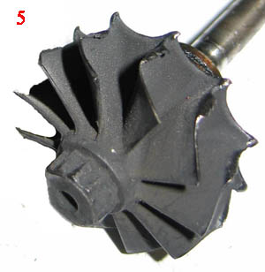

Сегодня турбокомпрессор является неотъемлемой частью любого транспортного средства, будь то легковой автомобиль или трактор. Данное устройство выполняет важную роль в работе двигателя, увеличивая его мощность в несколько раз. Однако со временем турбина выходит из строя и требует капитального ремонта. Какие причины неисправностей такой детали?
На самом деле «виновников» поломки турбокомпрессора существует множество. Они могут скрываться даже под неправильной эксплуатацией турбины. Однако можно выделить такие главные причины повреждения турбокомпрессора, как:
-
Загрязненное масло. Во время эксплуатации автомобиля в турбокомпрессор попадает различная грязь, которая остается в корпусе подшипников. Со временем это может привести к сильному износу опорных шеек ротора, что в свою очередь спровоцирует выход турбокомпрессора из строя.
-
Недостаточное количество масла. Причинами затруднительного доступа масла могут быть загрязнённые или перегнутые трубки, которые подают масло к турбине, а также низкое давление масла в двигателе. Если доступ масла кратковременно прерывается, это может привести к тому, что ротор турбины и подшипники скольжения сильно перегреются. А недостаток смазочного средства во время интенсивной езды может привести к тому, что ротор будет заклинивать, а то и вовсе лопнет, после чего движение автомобиля станет не возможным;
-
Попадание посторонних предметов в турбокомпрессор. Вместе с воздухом в турбину могут попасть различные посторонние предметы, такие как, например, песок, кусочки резины, болты или гайки. Их наличие может привести к различным повреждениям лопастей колеса компрессора, вследствие чего турбокомпрессор может полностью выйти из строя. Причины попадания посторонних предметов могут быть разные, но наиболее часто это случается через невнимательную установку турбокомпрессора либо по причине отколовшихся кусков деталей во время установки турбины;
-

Оплавление лопастей колеса турбины. Зачастую это случается по причине использования некачественного топлива, неисправностей топливной системы, а также неправильной её регулировки.
-
Недостаточное охлаждение. Как известно, масло охлаждает мотор. Но в том случае, когда его недостаточно, турбокомпрессор может перегреться и довольно быстро выйти из строя.